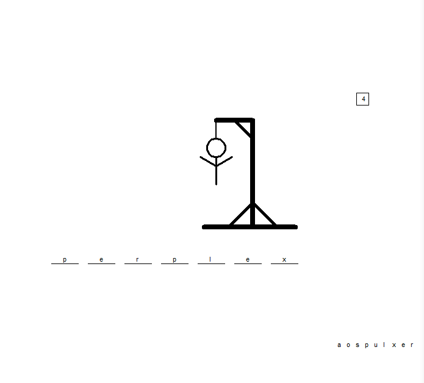
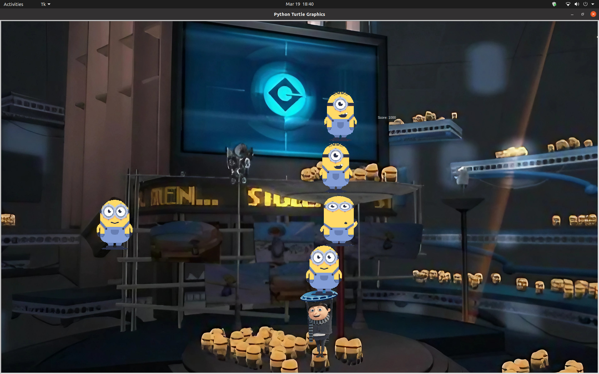
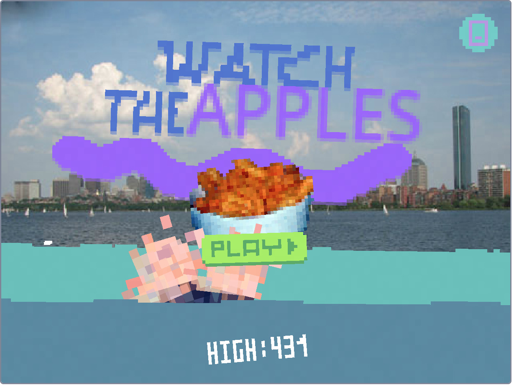
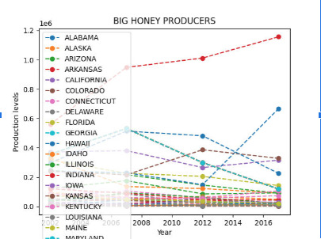
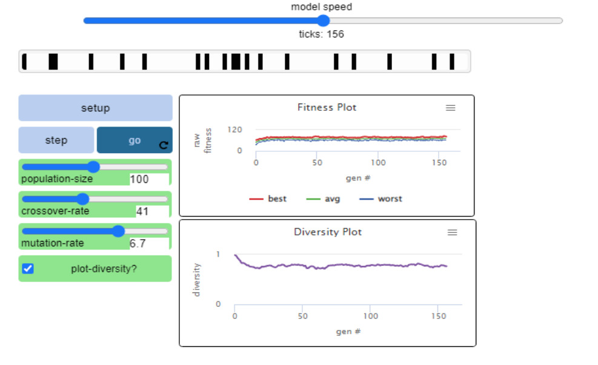
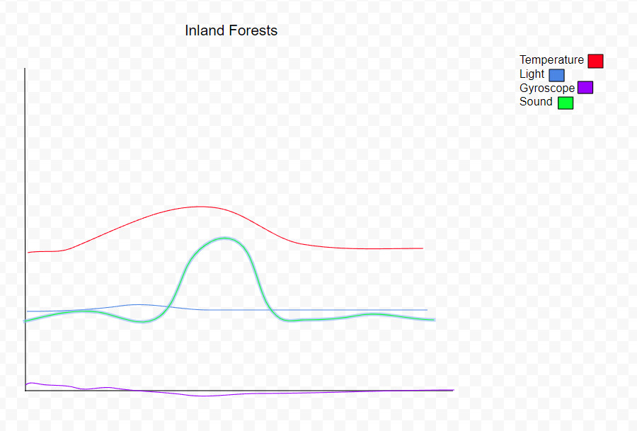

Home
Portfolio
About Me
This is my Portfolio Page!
Project 1
This is my Hangman project that my group did. The program selects words randomly from a preset word bank with the goal of guessing the correct word before the body of gets completely drawn. If the player guesses a letter or word incorrectly, then the program draws a body part until the entire figure is drawn. Any correct guesses are put into the letter bank bellow the spaces.

Project 2
This is my minion stacker game that my group did. The program contains a title screen and the main game. Once any key is typed into the command terminal, the game starts. Minions begin to continously fall from the sky and you are given control of a sprite to catch these minions. The minions stack on top of the previous minion stacked until the time runs out. Every minion is worth 250 points and you are given 15 seconds to stack as many minions as possible.

Project 3
This is a game that my group made on Scratch. It is a Kraken game where you are supposed to avoid the healthy food that falls from the sky and avoid the Kraken that lurks in the water below. This kraken is instead hands that seek to pull down to the bowl of cheeto puffs. This game also provides a level of difficulty after achieving a certain score. Score increments after every apple is avoided.

Project 4
This graph represents the honey production of each state in the US from 2002 to 2016. My group found and analyzed data found from the USDA website and converted into a visual representation of which states have been the biggest producers of honey.

Project 5
This is the model simulation that my team analyzed. It shows the general model of passing down genetics, in the way of crossing over and mutations. The model shows how these genetic modifcations affect the fitness of a species. The genetic diversity of the population is also modeled.

Project 6
This graph is the predicted data that one would expect from the conditions specified in the 3.1.6 lesson for the Inland Forests. We were given data for the sensors on a rover in an alien planet and tasked to compare this data to predicted data and my group concluded that this data followed the conditions of the Inland Forest.
